Menos do mesmo.
Sistema de design · v0.3 · provisório até aprovação do time More
![[Espécime da fonte]](brand/specimen/especime.png){kind=link}
Tudo o que faz o site da More parecer More, escrito em arquivos que pessoas e IA conseguem ler.
Os valores desta página foram medidos no site mymore.design em 15/10/2026 e no Instagram @more.mymore. Nada foi inventado: quando algo ainda é dúvida, está marcado como pendente. Cada cor, tamanho, espaço e movimento existe como token em brand/tokens/; esta página só os mostra.
Para quem cria: use esta página como guia. Para a IA: aponte para este repositório e peça para seguir o cstack (explicação no fim).
Seis ideias que seguram o resto
O fundo é off-white quente, como papel de revista. Transparência só nas barras flutuantes, nunca como estética.
A interface é quase monocromática. Cor saturada vem da madeira, do bouclê, do vidro fundido.
Nenhum canto arredondado. Imagens, barras e botões têm canto vivo.
Muoto fala os nomes e os preços. Muoto Mono fala com a interface, entre [colchetes].
Madeira maciça em seções generosas, peças com nome de gente, acabamentos com nomes de lugares e frutas: Jambo, Igaratá, Guaraná, Jamaica.
Navegação e ação vivem em barras de 35px no pé da tela. O resto da tela é das fotos.
O que a More acha
Uma peça não precisa combinar. "Não foi feita para combinar com o sofá. E isso é ótimo."
Material antes de adjetivo. Madeira maciça, vidro fundido, alumínio naval, ditos pelo nome.
Contra o móvel genérico de projeto. A peça tem que se sustentar sozinha numa sala.
Voz
Nome da peça, ponto. Depois uma linha seca que discorda do óbvio. Depois, se precisar, o material. Português primeiro. Nas 42 legendas do Instagram não há exclamação, emoji nem hashtag: é assim que continua.
Mesa de jantar componível Naz. Não é quadrada, só parece.
Banco João. Precisa da sua Maria.
Maçaneta Constantin. A primeira impressão é na mão.
Móveis com alma, feitos para o uso diário.
Peças sofisticadas com personalidade única!
Purity of lines and natural beauty.
Nomes
Um nome por peça, igual no site, no Instagram, na etiqueta e no arquivo: tipo em minúscula + Nome. Mesa de centro Cildo, Cadeira 556-A, Luminária Ngoni, Poltrona Leticia. Hoje há versões diferentes da mesma peça (Mesa Cildo / Mesa de centro Cildo, Cadeira 556 / 556-A, Torre de luz / Luminária Ngoni, Leticia / Letícia).
A marca em dois tamanhos
M ou XL nas peças; S (60 px) só na barra do menu do site. Preto, branco ou off-white: preto sobre amarelo-igaratá, branco sobre vermelho-jambo, verde-jamaica e berinjela. Nunca contornada, espelhada ou com padrão por cima. Use o arquivo assets/official/more-wordmark-currentcolor.svg e dê a cor pelo CSS.
M aparece no cartaz da TOM.01 (16% do lado curto, girada 90°), no rodapé do site (19% da largura) e na capa do livro anterior (cerca de 25%). XL aparece no convite de 05.11, quase da largura toda, encostada embaixo. O tamanho mínimo S e o respiro igual ao O são propostas nossas: estão em Propostas, fora das regras.
Cor
Também existem marrom #574D4B e erro #E07A5F (erro reprova como texto: 2,27:1; usar com ícone ou sublinhado). cinza-texto #999898 está no código do site mas nenhum elemento usa. Os nomes em português são os mesmos do código do site.
Campos de cor · impresso, social e loja (R-COLOR-04)
As cores fortes da More já existem como fundos de foto no Instagram (cerca de 1 em cada 12 posts) e na capa do livro anterior. Elas viram campos chapados em cartaz, convite, livro, vitrine e post. Nunca entram na interface da loja, e nunca duas no mesmo quadro.
#9A1935
#DA9015
#323E1C
#332436
Hex amostrados de JPEG do Instagram (posts da TOM.01, Pendente Naz, Sofá Catedral, Luminária Fantô): trocar pelos valores das fotos originais quando chegarem. Os nomes são acabamentos reais da More; ligar cada foto a um acabamento foi dedução nossa.
Tipografia
Duas famílias da 205TF: Muoto e Muoto Mono Condensed, licenciadas e hospedadas no tema. Nesta página aparecem substitutas livres (DM Sans e Martian Mono condensada) porque a licença da fonte original é do site.
Para peças feitas fora do site (posts, impressos, páginas novas) use as substitutas, carregando esta linha: https://fonts.googleapis.com/css2?family=DM+Sans:opsz,wght@9..40,400;9..40,600&family=Martian+Mono:wdth,wght@75,400&display=swap. Impresso também usa as substitutas até a licença desktop da 205TF chegar.
Muoto: 26 é o nome do produto na PDP e a frase do menu; 32 é a frase do rodapé; no celular viram 22 e 25. Mono: 13 no desktop, 12 e 15 no celular. Também existem 9 (preço riscado), 12 e 28 (carrinho).
Peso: o site pede 300 nos textos em Muoto, mas só carrega o arquivo Regular, então o que aparece é Regular. 600 (filtro ativo) e 700 (newsletter) não têm arquivo: são negrito sintético. Sem caixa-alta, sem espaçamento entre letras.
Métricas lidas dos arquivos do site: UPM 1000, altura-x 520, caixa-alta 720, entrelinha normal 1,2, nas duas famílias. Espécime em brand/specimen/.
Espaço e grid
Espaços internos pequenos, distâncias grandes entre peças. O ar vem do vazio entre as fotos, não de margem dentro dos blocos.
Grade (catálogo) · 4 colunas, vão de 7vw, fotos 3:4
Lista · 10 colunas, vão de 6px, retrato ocupa 2, paisagem 3:2 ocupa 3
No celular: 2 colunas, e a cada 5 cards um ocupa a largura toda.
Cantos (R-SHAPE-01)
Estrutura tem canto vivo: fotos, cards, barras, botões e campos. Raio só em peças pequenas ou flutuantes, e só destes valores:
| Token | Valor | Onde aparece no site |
|---|---|---|
| radius.none | 0 | tudo que é estrutura |
| radius.thumb | 2px | amostras de material na PDP |
| radius.tooltip | 8px | tooltip de opção, só os cantos de baixo |
| radius.panel | 10px | caixa do rodapé, com desfoque |
| radius.round | 50% | círculos: botões de quantidade, checkbox |
Breakpoints
1440 · 1200 · 1024 · 768 · 600 (max-width)
Componentes
Barras flutuantes (menu, ação, compra)
35px de altura, 320px de largura, canto vivo. A barra de ação fica 6px acima do menu. Passe o mouse (ou toque) para ver o estado ativo em cart-accent.
Botões em colchetes e filtro
Card de produto e etiquetas
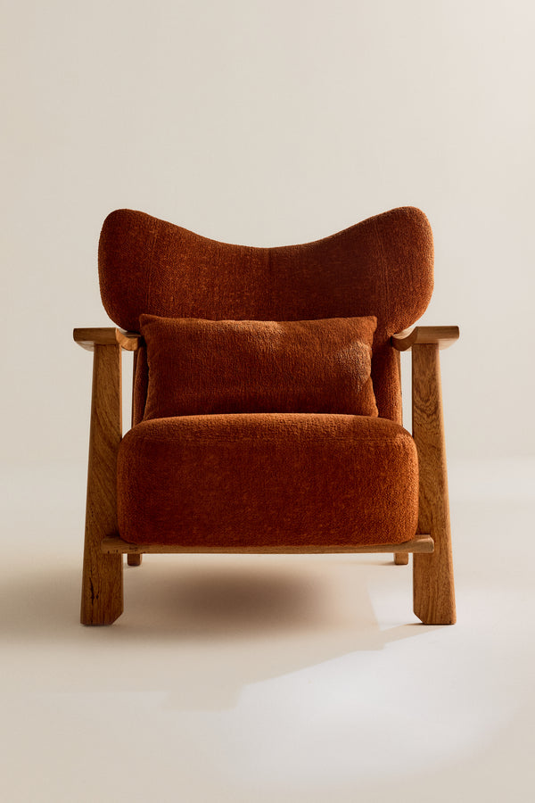
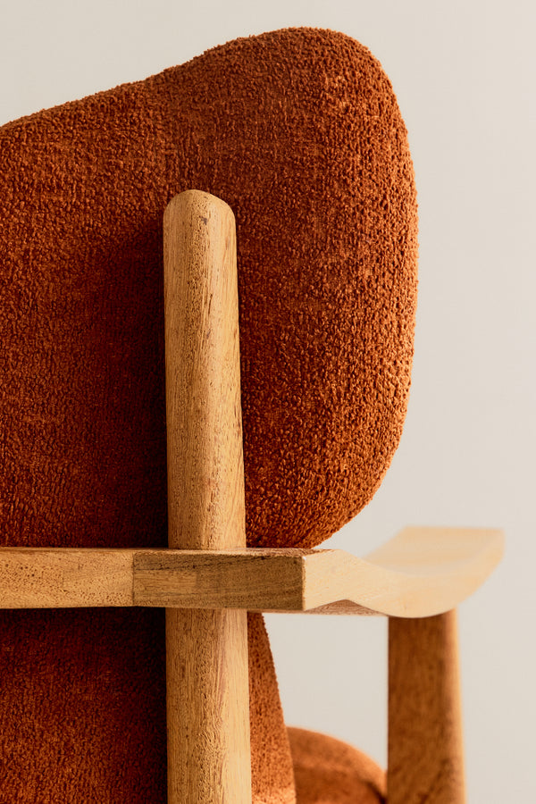
Como está hoje. Passe o mouse.
Proposta: sem preço na grade, etiqueta "Sob encomenda".
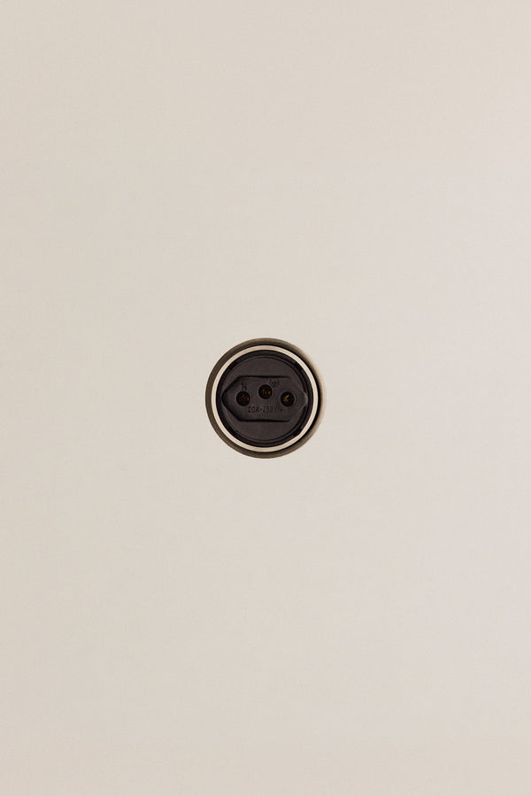
Pronta entregaProposta: o único acento marca o que se compra já.
Seletores de material e acordeão
Selecione a Madeira
Selecione Cor
Detalhes
Descrição
Baixar
No site, os seletores são fotos recortadas do material real (blocos de madeira, tecido). Aqui viraram cor chapada só para ilustrar. Bolinhas redondas só na tomada.
Movimento
Devagar e curto. Fades e crescimentos de 0,2 a 0,8s, sempre com saída suave. Passe o mouse ou toque no bloco abaixo.
Em vídeo (R-MOTION-02)
Troca de foto sem fade, na ordem dos carrosséis: peça inteira, detalhe, material.
A sombra dura da janela atravessa a peça. Está no vídeo do convite de 05.11.
Fotografia
Estúdio: fundo bege contínuo, uma luz dura de lado que desenha uma janela no chão e na parede, peça em 3/4, câmera um pouco acima do assento, 3:4. Detalhes em crop arquitetônico (encaixe, trama, borda do vidro) ao lado da peça inteira.
Low-key (Instagram): fundo quase preto, uma luz quente rasante, close de material. A peça nunca é alterada por IA.
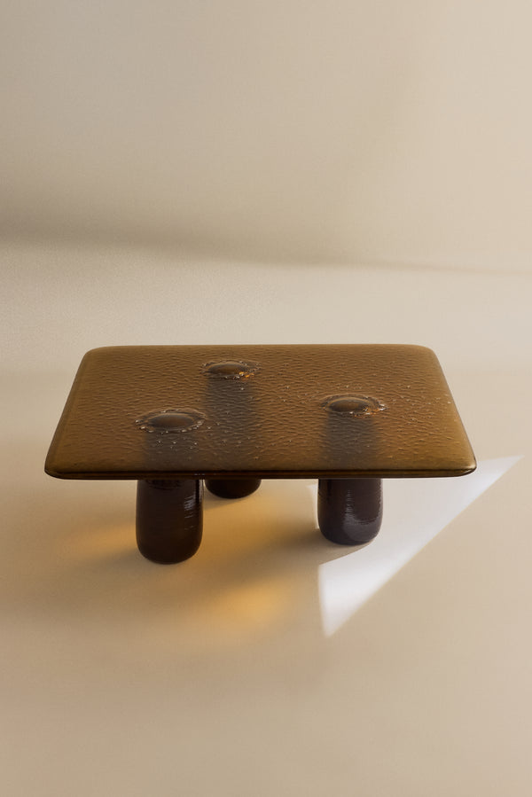
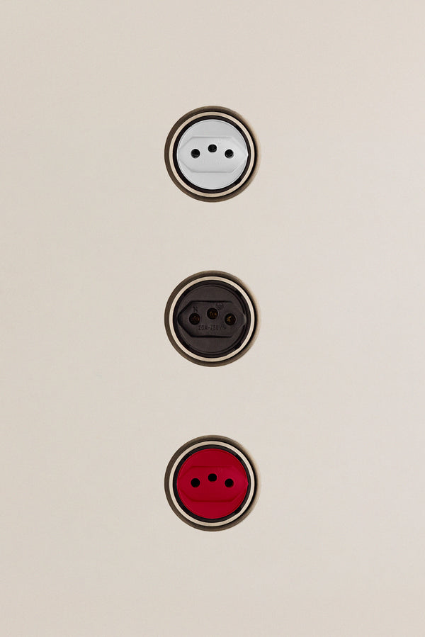
Campo de cor (Instagram): uma cor chapada atrás de uma peça, luz baixa. Até 1 a cada 9 posts. Bastidores: gente e equipe no set, no Instagram (feed e story) e no livro. Nunca na página da peça nem no Sobre.
Corte: nunca corte a peça. Se o recorte 4:5 ou 9:16 cortaria a peça, desloque o recorte; se ainda corta, use outra foto. Peça inteira com pelo menos 15% de ar acima, a peça no terço de baixo, sombra inteira. Detalhe sangra em pelo menos dois lados. Nunca recorte sobre o off-white: o fundo é a página.
Fora da tela
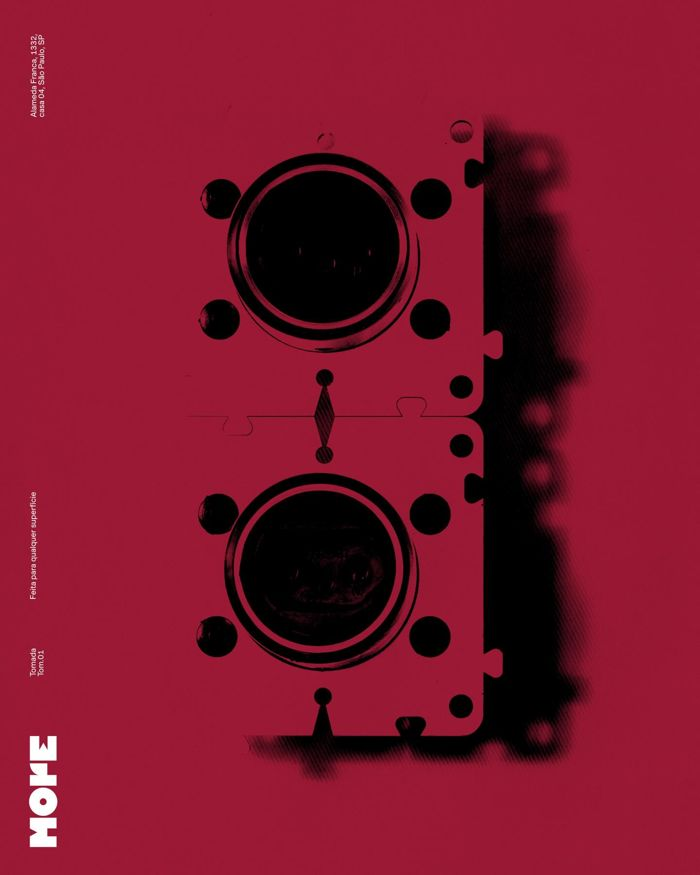
Receita do cartaz
O cartaz vermelho da TOM.01 é a única peça gráfica da More no Instagram. O que ele faz, medido no arquivo:
- Um campo de cor chapado (vermelho-jambo), sem degradê.
- A peça em preto, como silhueta dura, com a sombra borrada de lado.
- Três blocos de texto pequenos em Muoto, girados 90°, na margem esquerda: nome da peça, uma frase, endereço.
- A marca em M (16% do lado curto), girada 90°, no canto de baixo à esquerda, em branco.
- Nada mais: sem preço, sem chamada, sem moldura.
Exportação por canal
| Canal | Formato | Observação |
|---|---|---|
| Instagram feed | 4:5 · 1080×1350 JPG | Recorte do topo da foto 3:4. |
| Stories e reels | 9:16 · 1080×1920 | 250 px livres em cima e embaixo. |
| Shopify | 3:4 · 2000×2667 JPG q80 sRGB | Uma peça por imagem. |
| 600 px de largura | 3:4 ou 3:2. | |
| 1080 px no lado maior, JPG | Link em texto junto, nunca só na imagem. | |
| Impressão | 300 dpi · PDF/X-4 | Sangria de 3 mm, segurança de 5 mm, perfil para papel sem revestimento. |
Regras
Cada regra tem um script que diz passa ou falha, ou um par de imagens sim/não. Para checar uma peça: node checks/run-all.mjs <pasta>. O que o site de hoje já quebra está em checks/site-ao-vivo.txt.
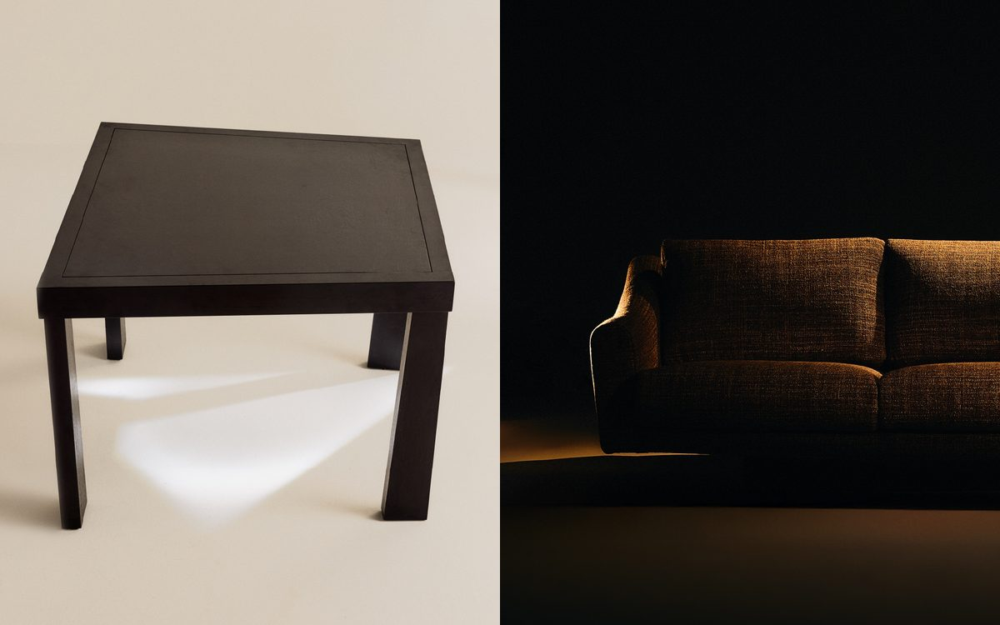
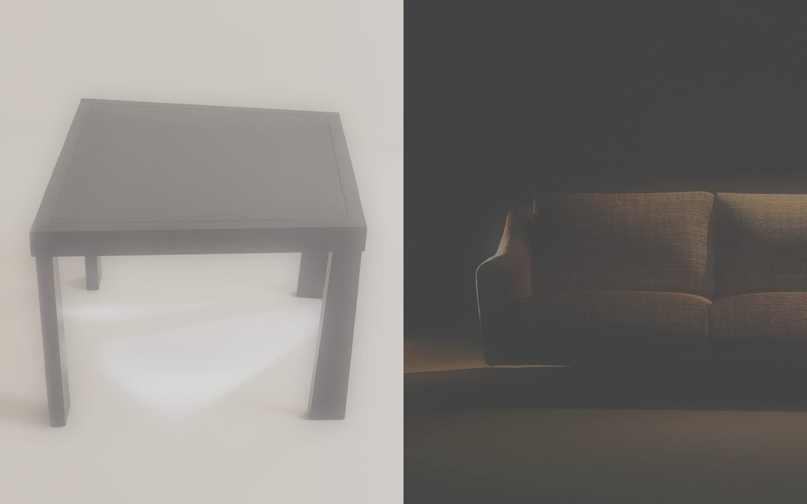
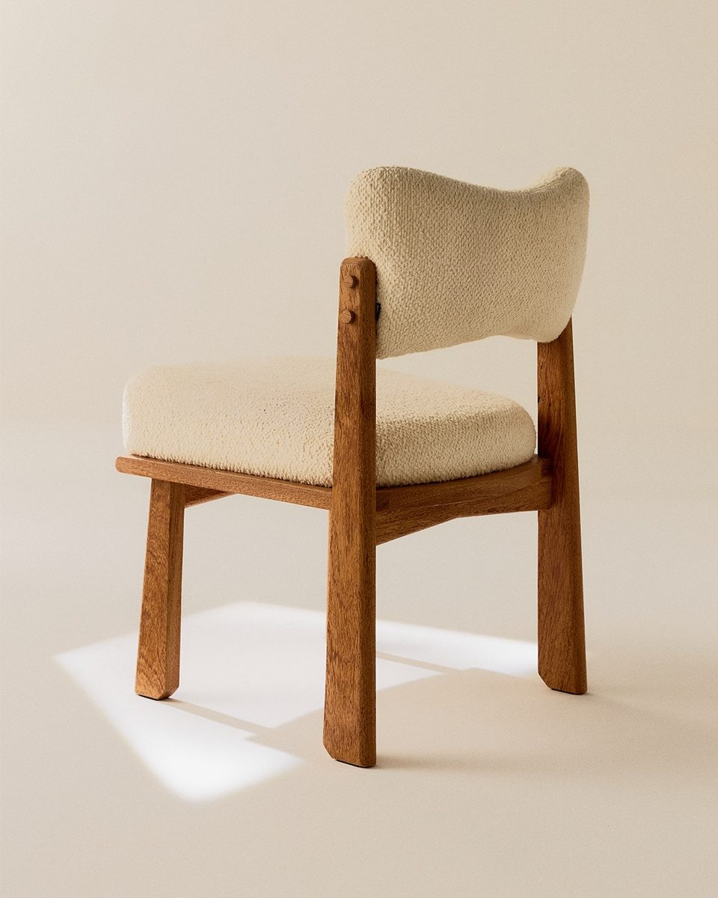
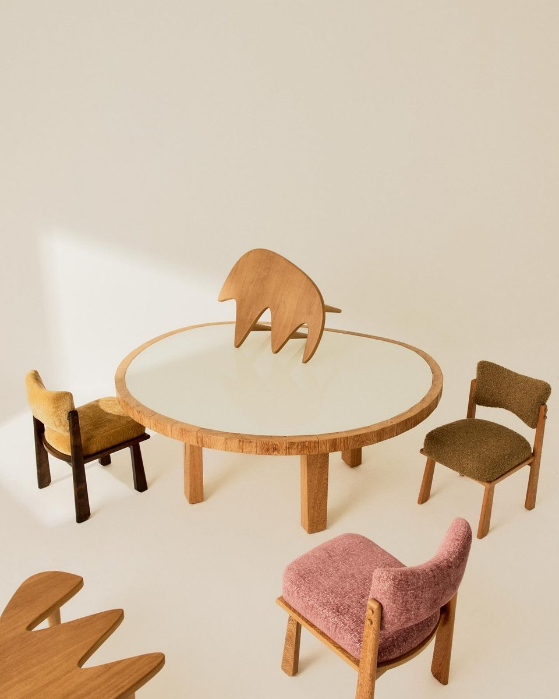
toda cor literal em CSS/HTML/SVG é o valor de um token de cor aprovado (brand/generated/tokens.css). Tokens color.site-sem-token-* (#1A1A1A, #DAD7D1, #DEDBD5) não contam como aprovados. Branco opaco só em color/fill/stroke (texto sobre fundo escuro), nunca em background. Definição de variável (--x: valor, como um tokens.css copiado) não é uso e não conta
node checks/color-tokens.mjs <arquivo>
html/body/:root declara background off-white #E5E1DB e color preto #2D211E; #000 opaco não aparece em nenhuma propriedade; #FFF nunca é fundo de html/body. Hoje o site quebra isto (body sem color, o texto corrido sai #000). Caso impresso (layout com @page ou @media print) - off-white é o papel, então html/body na impressão têm background none/transparent (em @media print); off-white como fundo impresso falha. Texto branco sobre campo é papel sem tinta (vazado)
node checks/ground-ink.mjs <arquivo>
ciano-destaque #8BC0D0 é a única cor cromática da interface (saturação HSL >= 0,25; a outra exceção é erro #E07A5F em seletor de erro). Ciano só aparece como estado ativo ou hover de navegação - seletor de navegação (nav, menu, filter, collection, categor, tab, link <a>) com :hover, .active, .is-active, :focus, [aria-current], .current, .selected. É o que o site faz - a aba Fixos (a#collection-fixos.active e :hover). Nunca como texto sobre off-white (contraste 1,53:1) e nunca decorativo. Em layout de peça impressa ou social (HTML/CSS com @page, data-canvas, ou nome com PRINT, IG, IGS, CONVITE, LIVRO, VITRINE, ETIQUETA, CARTAZ) os tons campo são permitidos (R-COLOR-04) e o ciano só aparece como o adesivo quadrado de 10 mm de "pronta entrega" (width e height 10mm/37,8px)
node checks/accent.mjs <arquivo>
estrutura é reta (radius.none) - imagens, cards, barras, botões de checkout e filtro, inputs. border-radius só pode ser 0, 2px (radius.thumb), 8px (radius.tooltip), 10px (radius.panel), 50% (radius.round, círculos) ou as formas de tooltip "8px 8px 0" / "0 8px 8px". Qualquer outro valor falha. O site tem três fora da escala (5px no modal, 6px no vídeo do sobre, 20px no label do modal)
node checks/radius.mjs <arquivo>
font-family começa com Muoto ou MuotoMono (Muoto Mono Condensed); fallbacks só DM Sans, Martian Mono, Helvetica Neue, Arial, sans-serif, ui-monospace, Menlo, monospace. Pesos - Muoto 400, ou 300 em seletor .muoto (o site pede 300, mas só o arquivo Regular é carregado, então renderiza 400); MuotoMono 400; 600 só em seletor de filtro ativo (active, ativo, selected, current, checked); 700 e qualquer outro peso falham
node checks/type.mjs <arquivo>
toda ação de texto (<button>, <input type=submit|button>, <a> com classe btn/button, role=button) tem uma palavra entre colchetes ([Voltar], Menu [+]). Ação só com ícone falha. Controles isentos - miniatura (conteúdo <img>), quantidade (+/-; class quantity, qty, stepper), fechar só com ícone (class ou aria-label close/fechar) e amostra de material (swatch, material, color-option). Botão em pílula é pego por R-SHAPE-01. No site falham hoje as ações de texto Checkout, Adicionar / A partir de, Baixar, Cadastrar, Todos e Categorias. Colchete envolve só ação ([Comprar], [Como chegar], Menu [+]); status e lugar nunca levam colchete ("Pronta entrega", "Sob encomenda · ~120 dias", "Jardins"). Peça estática (PNG de story/feed, cartaz, etiqueta - layout com @page, data-canvas ou nome PRINT/IG/IGS/CONVITE/LIVRO/VITRINE/ETIQUETA/CARTAZ) não tem ação, então não tem colchete; o link vai na legenda ou no sticker de link do story
node checks/actions.mjs <arquivo>
menu, carrinho e adicionar-ao-carrinho (seletor fixed/sticky com menu, add-to-cart, add_to_cart, in-cart, cart-button, checkout) ficam em barras flutuantes embaixo - declaram bottom e nunca top, centralizadas (left 50% + translate(-50%), ou left 0 + right 0), height 35px quando declaram altura, fundo com alfa < 1 (vidro preto-10/preto-80/cinza-overlay). Sem cabeçalho fixo - seletor fixed/sticky com header, cabecalho, topbar, navbar, nav ou toolbar e top falha. Isentos, padrão do site - o filtro da coleção (.collection-list__filter, sticky no topo) e o botão flutuante de voltar (.floating-back-button, topo, 30px)
node checks/bars.mjs <arquivo>
uma peça por foto de produto (grade, PDP, post de peça), ver o par de exemplos. Proporção da imagem 3:4 (fonte), 4:5 (feed, 1080x1350), 9:16 (story, 1080x1920, 250px de área segura em cima e embaixo) ou 3:2 (só lista horizontal), tolerância 1%. Em CSS de imagem, aspect-ratio só 3/4, 4/5, 9/16, 3/2; foto de produto com border-radius 0; miniatura e amostra de material (thumb, swatch, material, sample) podem ter 2px (radius.thumb), como no site. Raio fora da escala fica com R-SHAPE-01, sem contar duas vezes. O script só mede foto de produto e exportação de foto para canal - arquivo numa pasta fotos/ ou com foto, photo, PDT_, ig-feed/ig-story, story, feed, _IG_ ou _IGS_ no nome. Nunca mede captura de página nem render de layout (nome com web, captura ou folha, ou imagem mais alta que 2,5x a largura)
node checks/aspect.mjs <arquivo>
foto de peça é fotografia, nunca gerada ou alterada por IA; troca de acabamento só com foto real ou render exato do material. O arquivo falha se tiver metadado IPTC DigitalSourceType trainedAlgorithmicMedia/compositeWithTrainedAlgorithmicMedia/algorithmicMedia, metadado que cite um gerador (Midjourney, DALL-E, gpt-image, Firefly, Stable Diffusion, Imagen, Gemini, Flux, Ideogram, Runway, Sora, Recraft, Krea, Magnific, Generative Fill) ou sidecar <arquivo>.lineage.json com operação de geração/edição. Quem exporta preserva os metadados
node checks/no-ai.mjs <arquivo>
registro estúdio = fundo bege infinito + uma luz dura lateral com sombra de janela de borda nítida; registro low-key = fundo quase preto + uma luz quente rasante. Luz difusa, sombra de borda mole e preto levantado para cinza falham. Ver o par de exemplos. As fotos próprias da More já publicadas (feed do Instagram e site) são o conjunto de referência e sempre passam; o par de exemplos vale para sessões novas
ver par sim/não acima
a marca entra sempre com os paths oficiais (assets/official/more-wordmark.svg, more-wordmark-currentcolor.svg ou more-wordmark-small.svg, coordenadas a 0,1), inline no SVG/HTML, com fill="currentColor" nos paths e a cor dada pelo CSS a partir dos tokens. Nunca por <img>/<image>/<use> - <img> não herda currentColor e o more-wordmark.svg sai #000, o que quebra R-COLOR-02 (o fill black do arquivo é padrão do arquivo, não cor da marca). "MORE" digitado como texto ou paths diferentes falham. Em imagem gerada, a marca é composta depois (skill image-edit), nunca pedida ao modelo; as faces 205TF também não entram em prompt
node checks/wordmark.mjs <arquivo>
nenhuma palavra proibida (exclusivo/a, exclusividade, sofisticado/a, sofisticação, luxuoso/a, luxo, requintado/a, requinte, premium, glamour, chique, alma, essência, personalidade); zero ponto de exclamação, emoji e hashtag; nenhuma frase com mais de 16 palavras (máximo do feed de 2026). Conteúdo de tabela, lista de definição e itens de lista (table, dl, li - fichas e medidas) não conta para o tamanho de frase. "personalidade" segue proibida, exceto dentro de uma linha aprovada escrita igual, listada em checks/aprovadas.json
node checks/copy.mjs <arquivo>
toda página de produto (og:type=product) mostra em texto exatamente um rótulo - "Pronta entrega", sem prazo, ou "Sob encomenda" com prazo em dias, semanas ou meses ("Sob encomenda · ~120 dias"; ~120 dias é o padrão do negócio, salvo quando a ficha da peça diz outro prazo). Só o texto é checado, não a cor (no card de grade do site, "Pronta entrega" é .product-card-grid__ready-delivery em cinza-medio 10px, visível no hover)
node checks/commerce.mjs <arquivo>
nenhum card de grade (classe product-card* ou card-product*) mostra preço (R$); o preço fica na página de produto (proposta da call de 2026-10-15, ainda não decidida pela equipe)
node checks/grid-price.mjs <arquivo>
duração é um token motion.duration - 80, 140, 200, 300, 450, 500, 700, 800 ou 1000ms (0s = troca instantânea); qualquer outro valor falha (no site - 150, 180, 280, 400, 600ms). Curva - ease (a principal do site), ease-out, ease-in-out ou os tokens snap, out-expo, out-quint; linear só em contador (ou com duração 0); ease-in e qualquer outro cubic-bezier falham. "transition: all" falha. Todo seletor animado tem fallback em @media (prefers-reduced-motion - reduce), por regra * ou pelo mesmo seletor
node checks/motion.mjs <arquivo>
duas fórmulas; o script escolhe pela primeira linha "tipo: peca|evento|bastidores|marca" ou pelo nome do arquivo (evento, abertura, bastidores, marca, sobre => fato). PEÇA - frase com o nome canônico (checks/nomes-canonicos.json), depois UMA linha seca de 3 a 12 palavras, antes da linha de material (opcional). FATO (evento, bastidores, marca, post sem peça) - a primeira linha diz o fato (o quê; em evento também quando, data dd.mm ou "dd de mês", e onde); depois no máximo UMA linha seca; o resto são linhas de fato (endereço, horário); nome de peça não é exigido. Linha seca = sem palavra de material/ficha da lista publicada em checks/palavras-de-material.json e sem status ("Pronta entrega", "Sob encomenda"). Sempre 4-145 palavras e palavras proibidas de R-COPY-01. A linha seca discorda da convenção, no tom destas aprovadas (checks/aprovadas.json) - "Não é quadrada, só parece.", "Essa não vai com as outras", "Nada grita, só a concorrência.", "Precisa da sua Maria.", "Não foi feita para combinar com o sofá."
node checks/caption.mjs <arquivo>
português primeiro. Página com <html lang="pt-BR">; todo bloco de 6+ palavras em inglês (mais palavras-função inglesas que portuguesas) fica dentro de elemento lang="en" como segunda versão; em texto solto o primeiro parágrafo é português. O texto em inglês do Sobre quebra isto hoje
node checks/lang.mjs <arquivo>
tons color.campo (vermelho-jambo, amarelo-igarata, verde-jamaica, berinjela; petróleo é só proposta) são fundo de cartaz, convite, livro, vitrine e social. Em imagem - no máximo um tom campo com 5%+ dos pixels (a até ΔE 10 em CIELAB); petróleo nunca como fundo (20%+); em peça gráfica (MORE_PRINT/CONVITE/LIVRO/VITRINE) o fundo é chapado - dos pixels a até ΔE 25 do tom, 85%+ estão a até ΔE 10. Em CSS da loja/site, nenhum tom campo (R-COLOR-03 pega); em layout impresso/social (@page, data-canvas, nome PRINT/IG/IGS/CONVITE/LIVRO/VITRINE/ETIQUETA/CARTAZ) o campo é permitido. Ciano fica fora das peças campo (é cor de interface)
node checks/campo.mjs <arquivo>
num layout (SVG com viewBox, ou HTML com data-canvas="LxA"), medido pelo script. Onde leva marca (tipo lido do nome MORE_<CANAL>_<slug>_<variante>; MORE_FONTE_ pela variante) - obrigatória em post de evento (IG com slug evento-<aaaammdd>) e em cartaz, convite, vitrine e livro; proibida em post de peça no feed (que também não leva texto sobre a foto, observado em 76% do feed; o texto vai na legenda) e em story (IGS); opcional em etiqueta (ETIQUETA). M - lado maior da marca = alvo 1/6 (16,7%) do lado menor do quadro, tolerância 16-25%. XL - largura da marca 95-100% da largura do quadro, base 0-5% acima do pé do quadro, sem sangrar (marca inteira dentro); XL pode passar por cima da margem do grid de impressão (1/24 do lado menor). Outro tamanho falha. Cor só preto #2D211E, branco #FFF ou off-white #E5E1DB; sobre amarelo-igarata, preto; sobre vermelho-jambo, verde-jamaica e berinjela, branco. Nunca contornada, espelhada, esticada ou com padrão. Proposto e fora do guia até aceitarem - S mínimo 60px/18mm e respiro = altura do O
node checks/logo.mjs <arquivo>
todo contêiner com rolagem vertical (overflow ou overflow-y auto/scroll) termina com padding-bottom >= 106px (layout.bar-safe) no mesmo seletor, para as barras flutuantes nunca cobrirem conteúdo no celular
node checks/scroll-safe.mjs <arquivo>
um nome canônico por peça, "<Tipo> <complemento em minúscula> <Nome>" (Mesa de centro Cildo, Cadeira 556-A), igual no site, Instagram, etiquetas e arquivos. A lista e as variantes proibidas estão em checks/nomes-canonicos.json; as marcadas decisao_pendente (Ngoni, Leticia/Letícia, Naz componível, INT.01) esperam a equipe
node checks/names.mjs <arquivo>
vídeo troca de foto por corte seco (Hard cut) - nenhuma fusão nem fade, medido pelo script; o movimento de luz é Shadow sweep (mancha dura de janela atravessa a peça com a câmera parada, observado no convite 05.11), ver o par de exemplos. Proposto e fora do guia até aceitarem - Build (letras M-O-R-E em sequência, 120ms de intervalo)
node checks/cuts.mjs <arquivo>
Fatos
Só isto pode aparecer como fato. O que não está aqui fica fora da peça até o time confirmar (lista em Próximos passos).
| Fato | Valor | Fonte |
|---|---|---|
| Loja | Alameda Franca, 1332, casa 04, Jardins, São Paulo, SP | cartaz TOM.01 e rodapé do site |
| Abertura da loja | 05.11 (2026). Sem horário. | convite atual |
| Nome do lugar | "loja" para o endereço físico | texto Sobre do site |
| Pronta entrega | Tomada TOM.01 (miolo preto, vermelho ou branco). Sem prazo no texto. | site |
| Sob encomenda | todas as outras peças: "Sob encomenda · ~120 dias" | call de 15/10 |
| Preços | só os do site no dia; TOM.01 e Estante Dominó estão com R$ 1 provisório e não entram em peça | site |
| Medidas e materiais | só os da página da peça no site | site |
| Como a More se apresenta | "Estúdio e galeria de móveis em São Paulo." | texto Sobre do site, traduzido |
| Instagram e site | @more.mymore · mymore.design | site |
Receitas por canal
O que fazer em cada formato. A coluna da direita diz de onde vem: o que é "padrão provisório" foi decidido por nós para não deixar dúvida e está na tabela de aceite.
| Canal | Receita | Origem |
|---|---|---|
| Post de peça 4:5 | Só a foto, 1080×1350. Sem texto, sem marca na imagem. Texto vai na legenda (fórmula R-COPY-02). Foto quadrada: recorte no centro; foto 3:4: recorte do topo. | observado (76% do feed) |
| Post de evento 4:5 | Campo de cor + data em display + marca XL embaixo + endereço em Muoto girado. Legenda começa pelo fato (o quê, quando, onde). | convite 05.11 |
| Story 9:16 | Foto 9:16 recortada no centro. Texto só no terço de cima, abaixo dos 250 px livres, em Muoto 44 px (statement ×1,7) e mono 26 px. Sem colchetes: link vai no adesivo de link. Marca: não leva. | padrão provisório |
| Texto sobre foto | Preto #2D211E sobre área clara, branco sobre área escura. Nunca sobre a peça, só no fundo liso. | padrão provisório |
| Cartaz de peça | Receita do cartaz (acima), só em vermelho-jambo ou amarelo-igaratá: nos campos escuros a silhueta preta some. Silhueta feita da foto real por limiar, sem IA. | cartaz TOM.01 |
| Cartaz de evento | Sem peça: campo, data em display-1, marca XL embaixo (pode passar a margem do grid), três blocos girados com o endereço. | convite 05.11 |
| Blocos girados | Muoto 1,2% da largura do quadro (A2: 14 pt; 1080 px: 13 px). | medido no cartaz TOM.01 |
| Etiqueta | Nome em Muoto, status em mono sem colchetes, medidas e madeira do site, mymore.design. Sem preço. Furo de 5 mm no canto de cima à esquerda, a 8 mm das bordas. | padrão provisório |
| Página nova | Componentes desta página. Barra de baixo com uma ação em colchetes; página de evento usa [Como chegar] com link do Google Maps para o endereço. | site + padrão provisório |
Teste com quem não viu a criação
Duas sessões que nunca leram as conversas de criação fizeram 10 peças cada (feed, story, etiqueta, cartaz A2, página), só com este repositório, e anotaram cada vez que precisaram decidir algo que o sistema não dizia. Depois de cada rodada o sistema foi corrigido, não as peças.
| Rodada | Dúvidas anotadas | Contradições internas | Falta de regra | Falta de fato | Regras que reprovam as peças |
|---|---|---|---|---|---|
| 1 | 100 | 11 | 76 | 13 | 7 de 23 |
| 2 | 91 | 22 | 52 | 17 | 2 de 24; 0 depois de corrigir as duas contradições |
A rodada 1 foi classificada por nós depois, pelos rótulos do diário; a rodada 2, pela própria sessão. Por isso as contradições não se comparam direto: a rodada 2 também pegou contradições novas, criadas pelas receitas e fatos que entraram depois da rodada 1. O que sobra é quase todo fato que só o time tem: fotos originais em alta, ficha de cada peça, texto Sobre em português, detalhes da abertura.
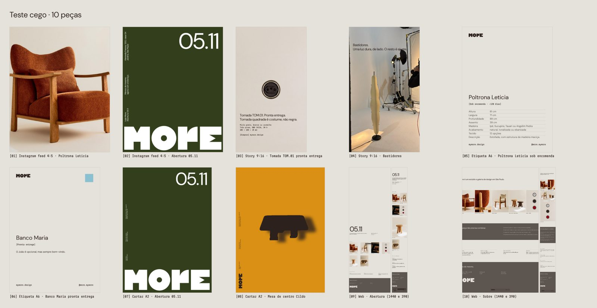
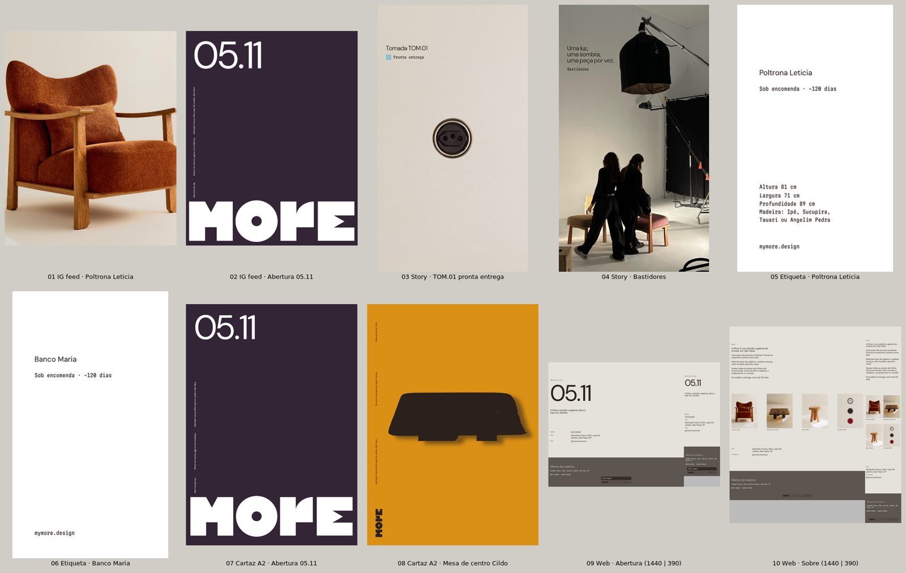
Propostas
Tudo aqui foi inventado por nós, sem uso da marca que confirme. Não vale como regra. Cada item tem uma linha em state/approvals.jsonl; quando o time aceitar, sobe para o corpo do guia.
Tamanho mínimo de 18 mm no papel (na tela, os 60 px da barra do site já são medidos).
Espaço livre em volta igual à altura do O.
As letras M-O-R-E entram em sequência, 120 ms entre elas, do cinza ao preto.
#306C6A. Não existe acabamento com esse nome; a amostra é luz colorida na borda de uma mesa.
arquivos se chamam MORE_<CANAL>_<peça-slug>_<variante>_<AAAAMMDD>_v<nn>.<ext> (MORE_IG_mesa-de-centro-cildo_4x5_20261105_v02.jpg). CANAL - IG, IGS, SITE, PRINT, ETIQUETA, LIVRO, CONVITE, VITRINE, EMAIL, VIDEO, FONTE (HTML-fonte de uma peça); peça-slug = slug de nome canônico; sem peça, "marca" ou "evento-<aaaammdd>"; variante [a-z0-9-]; data real; extensão minúscula. Prefixo numérico de ordem ("01_") só dentro de pasta cujo nome começa com teste
node checks/filename.mjs <arquivo>
vale para cartaz, convite, livro, vitrine e etiqueta. O PDF entregue tem a página no formato final + 3 mm de sangria por lado (MediaBox = BleedBox) e TrimBox no formato final (ex. etiqueta 50x90 mm => página 56x96 mm; A2 420x594 => 426x600 mm). Off-white nunca é tinta (é o papel; papel natural sem revestimento 90-150 g/m²); no HTML-fonte, html/body com background none/transparent em @media print (ver R-COLOR-02); texto branco sobre campo = papel sem tinta (vazado). Raster de impressão >= 300 dpi. PDF com PDF/X-4 declarado = FINAL. PDF sem X-4 mas com as caixas certas = PROVA (não vai para gráfica) e passa - as ferramentas do repositório não geram X-4; a exportação final em PDF/X-4 com perfil CMYK é passo da gráfica/estúdio. Conferido no preflight, sem script - margem de segurança 5 mm; preto rico C60 M40 Y40 K100 (o único valor) só em áreas >= 10 mm de altura, texto < 10 pt em K100 puro
node checks/print.mjs <arquivo>
Recusada: o convite de 05.11 da própria More usa uma elipse. Só volta se o time decidir proibir.
Para imprimir (proposta, a validar com a gráfica)
| Token | Tela | CMYK | Pantone | Uso |
|---|---|---|---|---|
| off-white | #E5E1DB | é o papel | — | Papel natural sem revestimento, 90–150 g (Munken Pure, Pólen). Nunca imprimir como chapado. |
| preto | #2D211E | C60 M70 Y70 K80 | Black 5 C | Texto e logo. Áreas grandes em preto rico C60 M40 Y40 K100. |
| cinza-escuro | #5D554F | C0 M12 Y20 K75 | 411 C | Texto pequeno. |
| cinza-medio | #686868 | K70 | Cool Gray 9 C | Rótulos curtos. |
| ciano-destaque | #8BC0D0 | C40 M5 Y10 K0 | 7458 C | Só "pronta entrega": adesivo quadrado de 10 mm. |
Escala display · só impresso e telas grandes
display-1 240 pt · display-2 96 pt · display-3 48 pt. Entrelinha 0,9, espaçamento −0,02em, Muoto 400. Nunca dentro da loja.
Escala de impressão (pt)
Legenda 6 · rótulo 7 (mínimo do mono em papel sem revestimento) · texto 8,5 · interface 10 · título 14 · frase 20 · sobre 28. Para usar no InDesign, confirmar a licença desktop da 205TF: a licença web não cobre impresso.
Grid de impressão
12 colunas, margem de 1/24 do lado curto, linha de base de 12 pt, imagens em módulos 3:4 ou 3:2, marca XL na margem de baixo. O vidro das barras não existe no papel: vira preto a 10%, sem desfoque.
Peças da loja
Etiqueta: cartão sem revestimento 50×90 mm, nome em Muoto, linha em mono Sob encomenda · ~120 dias ou Pronta entrega (sem colchetes). Cartão em pé, 50 de largura. Caixa da TOM.01: preto rico, marca vazada, painel técnico em mono. Vitrine: uma peça, luz dura de lado.
Nome dos arquivos (R-FILE-01)
MORE_IG_mesa-de-centro-cildo_4x5_20261105_v02.jpg
Como usar com o Claude
- Abra o Claude com acesso a este repositório.
- Peça em português, do jeito que pediria a alguém do time:
Siga o sistema de design da More neste repositório e revise antes de me mostrar. - Quem cria não aprova o próprio trabalho: peça sempre uma segunda revisão, de preferência por outra pessoa ou outro agente.
- Toda correção de vocês ("isso não é More") vira regra nova no repositório. É assim que o gosto acumula.
[+] Para quem é técnico
O workspace segue o cstack. Antes de criar: /brief e a skill certa (/copywriting, /workflow landing-page, /shot-dna). Depois: /brand-verify e /creative-review. Regras ficam em brand/rules/; tokens em brand/tokens/, gerados com cstack tokens build.
Próximos passos
Quando chegar o acesso
- Shopify: rodar
shopify theme pull, comparar o tema comstate/token-diff.mde aplicar o mapa debrand/build/shopify/. A primeira correção é uma linha:body { color: var(--preto) }. - Fontes: os arquivos Muoto e Muoto Mono da 205TF e a licença. Confirmar se cobre desktop (InDesign, Figma) e quantos computadores. Hoje o site só carrega Muoto Regular.
- Fotos originais com EXIF: trocar os hex dos campos de cor, hoje amostrados de JPEG do Instagram.
- Figma da agência: comparar com
brand/build/figma/e manter um só. - Gráfica: papel, perfil de cor e prova das cores impressas.
Com o time
- Sessão de ratificação: passar regra por regra em
state/approvals.jsonl(aceita, muda ou recusa). - Vitor faz 3 peças sozinho, só com este guia, e anota onde travou. Cada trava vira correção no sistema.
- Decidir as grafias e nomes das peças (lista em Voz), o texto Sobre em português e os preços de R$ 1 na TOM.01 e na Estante Dominó.
- Ficha de cada peça (medidas, madeiras, tecidos, prazo, status) e a foto-mestra 3:4 em alta, para impresso a 300 dpi.
- O que acontece na abertura de 05.11 (horário, convite aberto ou fechado).